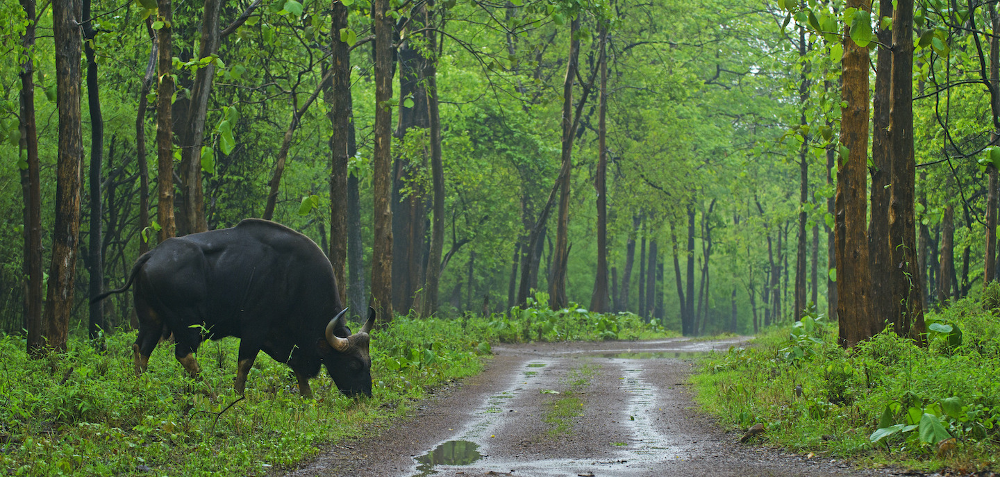
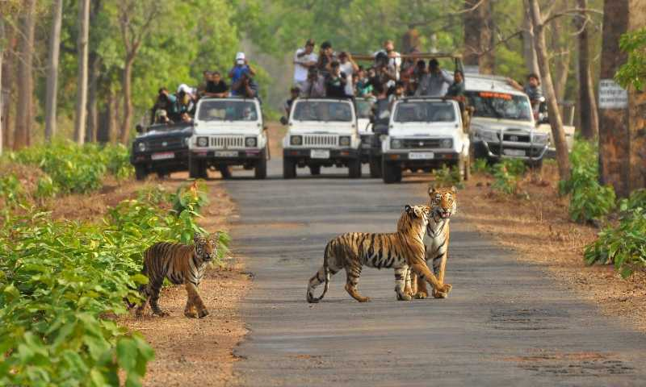
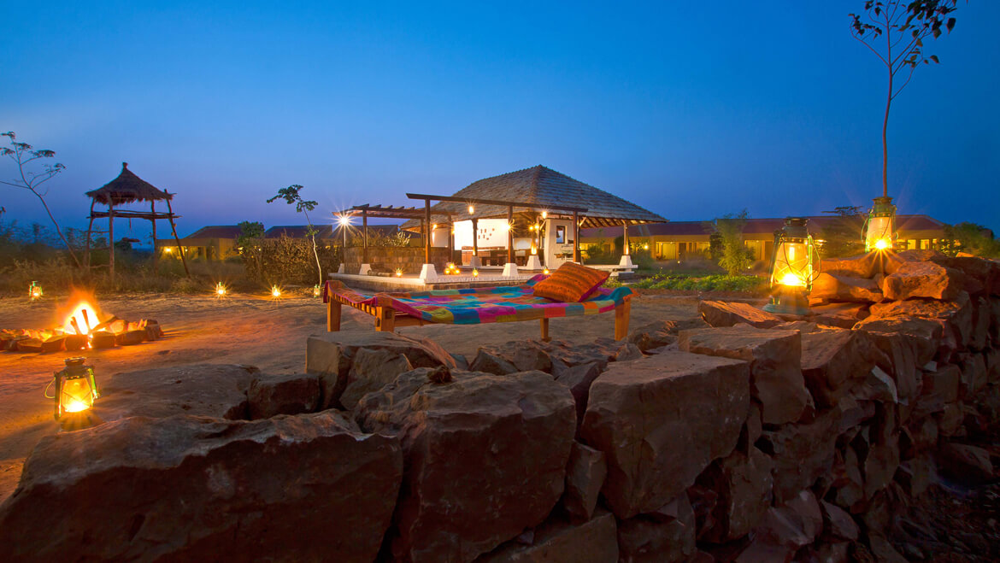

<div class="container-fluid">
    <div class="row">
        <div class="col-md-12">
            <div class="card bg-dark text-white">
                
                <div class="card-img-overlay">
                    <h5 class="card-title-main">Welcome to Tadoba-Andhari Sanctuary!</h5>
                </div>
            </div>

            <div class="p1 mt-3">
                <p>

                    At a distance of 29 km from Chandrapur, 145 km from Nagpur, 412 km from Hyderabad, 518 km from
                    Aurangabad, 747 km from Pune, and 863 km from Mumbai,
                    Tadoba - Andhari Tiger Reserve is a popular tiger reserve in Chandrapur district of Maharashtra in
                    India. Renowned as Maharashtra's oldest and
                    largest national park, Tadoba is one of the top wildlife sanctuaries in India and also one of the
                    best places to experience Maharashtra tourism.

                    The total area of the tiger reserve is 1,727 Sq. km and the core area of the tiger reserve is 625.40
                    Sq. km. The reserve also includes 32.51 Sq.km of
                    protected forest and 14.93 Sq. km of other areas. Densely forested hills form the northern and
                    western boundaries of the tiger reserve.

                </p>
            </div>
            <div class="clearfix">
                
                <p>
                    Tadoba Lake acts as a buffer between the park's forest and the extensive farmland which extends up
                    to the Irai water
                    reservoir. This lake is a perennial water source that offers good habitat for Mugger crocodiles to
                    thrive.
                    The Tadoba National Park is divided into three separate forest ranges, i.e. Tadoba north range,
                    Kolsa south range, and Mohurli range. There are 6 entry
                    points for this park which are Mohurli gate, Kolara gate, Kuswanda gate, Navegaon gate, Pangdi gate,
                    and Zari gate. There are 88 tigers, as of August 2016
                    in the reserve, and 58 in the forests immediately outside the reserve. The park also houses Bengal
                    Tigers, leopards, sloth bears, gaur, nilgai, dhole,
                    striped hyena, small Indian civet, jungle cats, sambar, spotted deer, barking deer, chital, and
                    chausingha. One can find many more varied species of
                    animals and birds here. The reserve also has teak, bamboo, arjun, salai, haldu, bija, tendu, jamun,
                    mahua, ain, and other trees. The main attraction of
                    the Tadoba National Park is Jungle or Tiger Safari in an open-top gypsy. There is a good chance to
                    spot the shy Sloth Bear and Wild Dogs.

                    The best time to visit the Tadoba -Andhari National Park is between the months of November to May
                    while the peak season is from March to May. Summer
                    is the ideal time to sight mammals near water holes.

                    The park is open for visitors from 15th October to 30th June every year and remains full-day closed
                    on every Tuesday.
                </p>
            </div>
            <div class="clearfix">
                
                <p>
                    Distance from Nagpur: 145 Kms <br>


                    Park Timings:<br>
                    7 AM - 6 PM on all days except on Tuesdays<br>

                    Entry Fee: <br>


                    Week Days: <br>
                    Rs. 20 for Person, Rs. 750 for Jeep, Rs. 1500 for Mini Bus, Rs. 2 for Still Camera, Rs. 200 for
                    Camera with 250 mm lenses, and Rs. 300 for Guide<br>


                    Weekends: <br>
                    Rs. 20 for Person, Rs. 1000 for Jeep, Rs. 2000 for Mini Bus and Rs. 300 for Guide.<br><br>


                    Distance from Mumbai (213 Kms) & Pune (110 Kms).<br>


                    How to reach:<br>


                    By Air: <br>
                    The nearest airport: Nagpur - Babasaheb Ambedkar International Airport (137 Kms)<br><br>


                    By Rail: <br>
                    Trains arrive here from Pune, Mumbai, Kochi, Mysore and other cities.<br><br>


                    By Bus:<br>
                    State-run and private bus services are available from many cities in Maharashtra and other states.
                    <br>


                    By Walk and Trek: <br>
                    You can visit here by walk and trek also (upto your prefrences)

                </p>
            </div>
            <div class="card mt-5">
                <h5 class="card-header">Hotels within 10kms</h5>
                <div class="card-body">
                    <div class="row">
                        <div class="col-sm-4">
                            <div class="card">
                                
                                <div class="card-body">
                                    <h5 class="card-title">Hotel Risha</h5>
                                    <p class="card-text">With supporting text below as a natural lead-in to additional
                                        content.</p>
                                    <a href="#" class="btn btn-primary">Book Room</a>
                                </div>
                            </div>
                        </div>
                        <div class="col-sm-4">
                            <div class="card">
                                
                                <div class="card-body">
                                    <h5 class="card-title">Tadoba Tiger Resort
                                    </h5>
                                    <p class="card-text">With supporting text below as a natural lead-in to additional
                                        content.</p>
                                    <a href="#" class="btn btn-primary">Book Room</a>
                                </div>
                            </div>
                        </div>
                        <div class="col-sm-4">
                            <div class="card">
                                
                                <div class="card-body">
                                    <h5 class="card-title">Tadoba Jungle Camp
                                    </h5>
                                    <p class="card-text">With supporting text below as a natural lead-in to additional
                                        content.</p>
                                    <a href="#" class="btn btn-primary">Book Room</a>
                                </div>
                            </div>
                        </div>
                        <div class="col-sm-4">
                            <div class="card mt-3">
                                
                                <div class="card-body">
                                    <h5 class="card-title">Jharna Jungle Lodges
                                    </h5>
                                    <p class="card-text">With supporting text below as a natural lead-in to additional
                                        content.</p>
                                    <a href="#" class="btn btn-primary">Book Room</a>
                                </div>
                            </div>
                        </div>
                    </div>
                </div>
            </div>
        </div>
    </div>
</div>